Version 2.0
Canvass is one app with one login for the whole team. It brings together:
Nothing is ever invented. If Canvass can't confirm something it says Not Available or Unverified, and every finding shows where it came from and when.
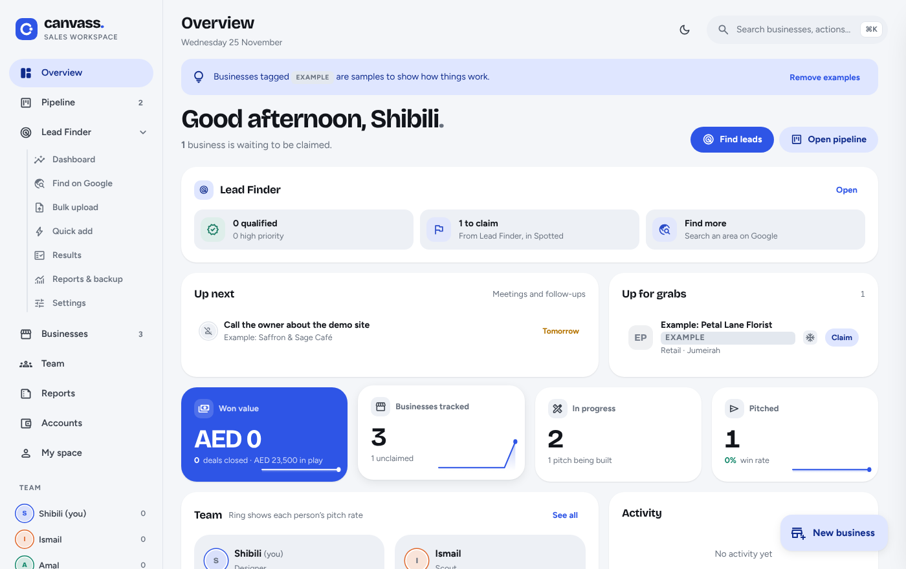
The Overview. The Lead Finder card shows qualified leads and leads waiting to be claimed.
Sign in with the username and password the admin gave you. The left menu has the Pitch HQ pages and the Lead Finder group.
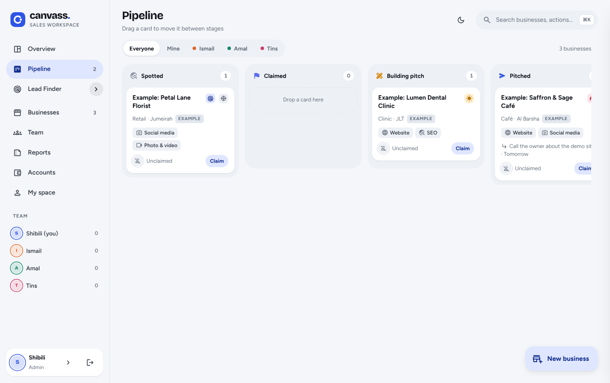
The Lead Finder menu folded away.
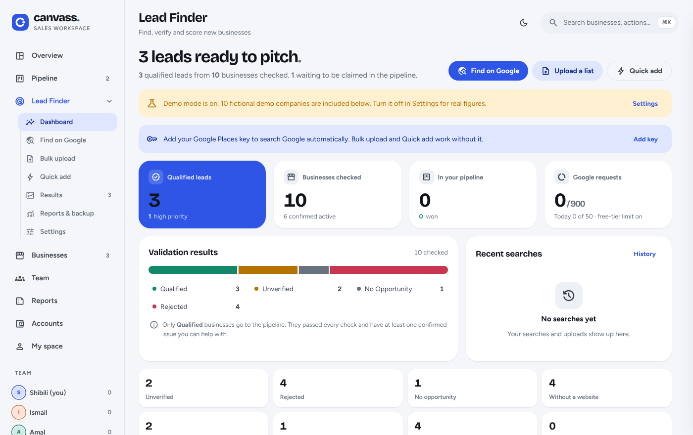
The dashboard counts only businesses Lead Finder has actually checked. Click a tile or a coloured result to open that list. Google requests shows how much of your free monthly allowance is used. Recent searches opens the results of each search.
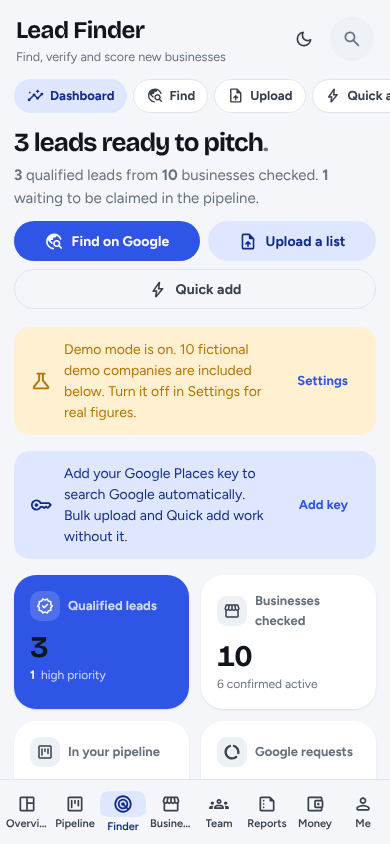
On a phone, the Lead Finder pages show their menu as a row of buttons at the top, and the bottom bar has a Finder tab.
Demo data: an admin can load fictional demo companies in Lead Finder → Settings to try things out. A yellow banner shows whenever demo data is included. Demo companies never go to the pipeline. Remove them before real work.
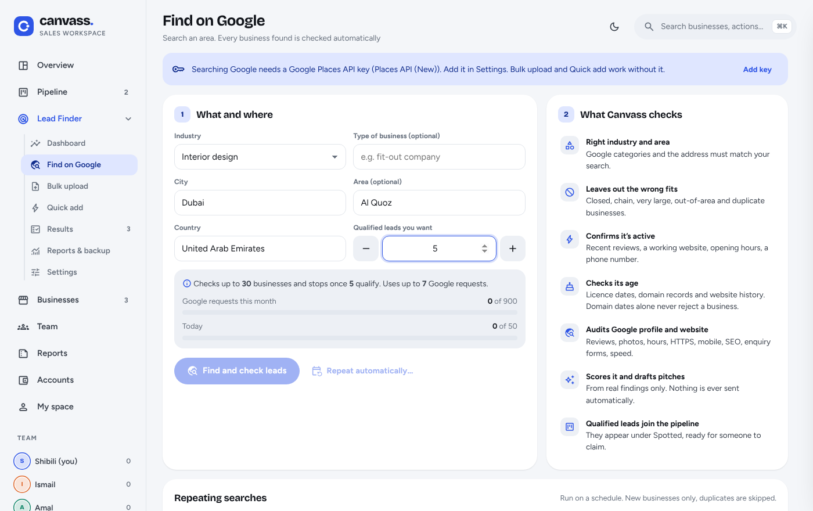
The search stops by itself once enough businesses qualify. If a Google limit is reached, Canvass stops before sending another request and still checks the businesses already found.
Repeat automatically… saves the search to run daily, weekly or monthly. Only new businesses are added; duplicates are skipped.
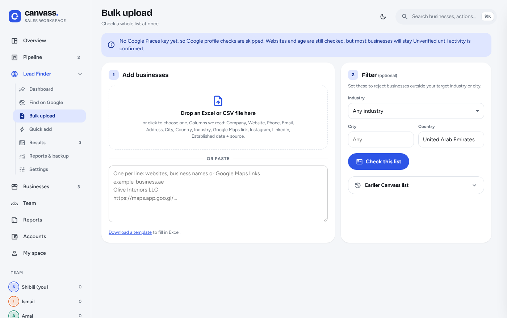
Drop an Excel or CSV file, or paste one item per line: websites, business names or Google Maps links. Recognised columns: Company, Website, Phone, Email, Address, City, Country, Industry, Google Maps link, Instagram, LinkedIn, plus Established date and Established source (for example a trade licence number) so age can be confirmed straight away. Download a template gives you a ready file.
The optional Filter rejects businesses outside an industry or city. Rows repeated in the file, or already in Lead Finder, are skipped and listed under Duplicates skipped.
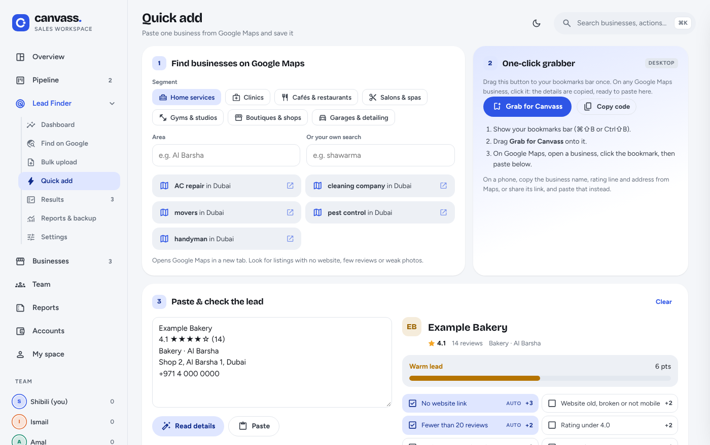
For one business you found yourself on Google Maps:
If the business is already in Canvass, you'll see a warning first.
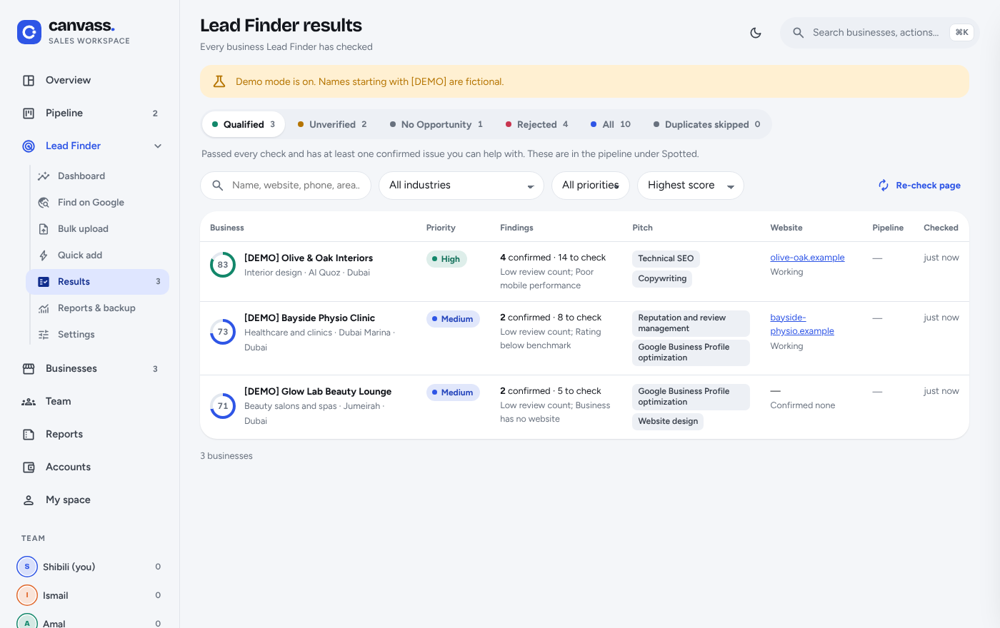
Results has a tab for each outcome: Qualified, Unverified, No opportunity, Rejected, All, and Duplicates skipped. Search, filter by industry or priority, and sort. The ring shows the lead score. The Pipeline column shows the stage if the business is in the pipeline; click it to open the pipeline card.
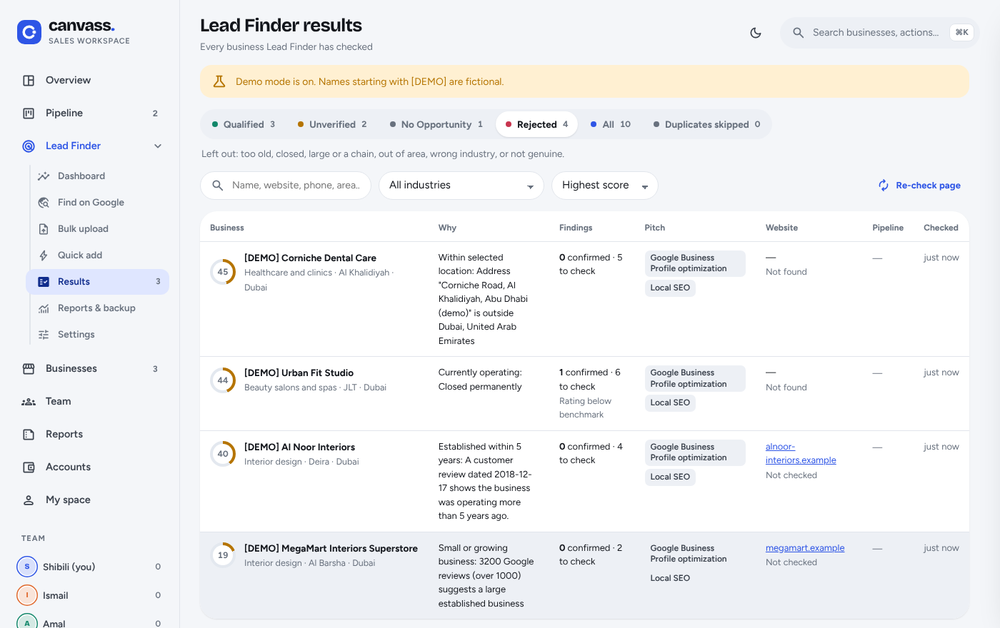
Rejected and Unverified businesses show the exact reason.
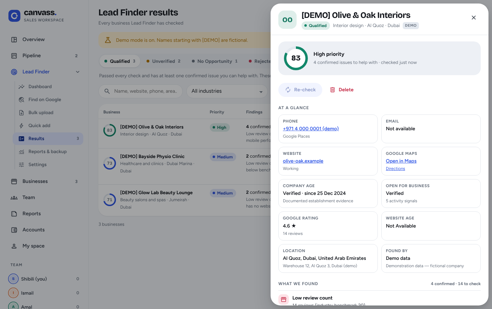
Click any business for its report: score and priority, why it isn't qualified (if it isn't), contact details with their sources, age, activity, Google rating, what was found (confirmed issues first, possible improvements folded underneath), and services to pitch with the findings behind them.
Fold-out sections hold the details: Add evidence (for example a licence date you confirmed; the business is re-checked immediately), All checks, Sources, Website check and Reviews. Re-check runs everything again with fresh data.
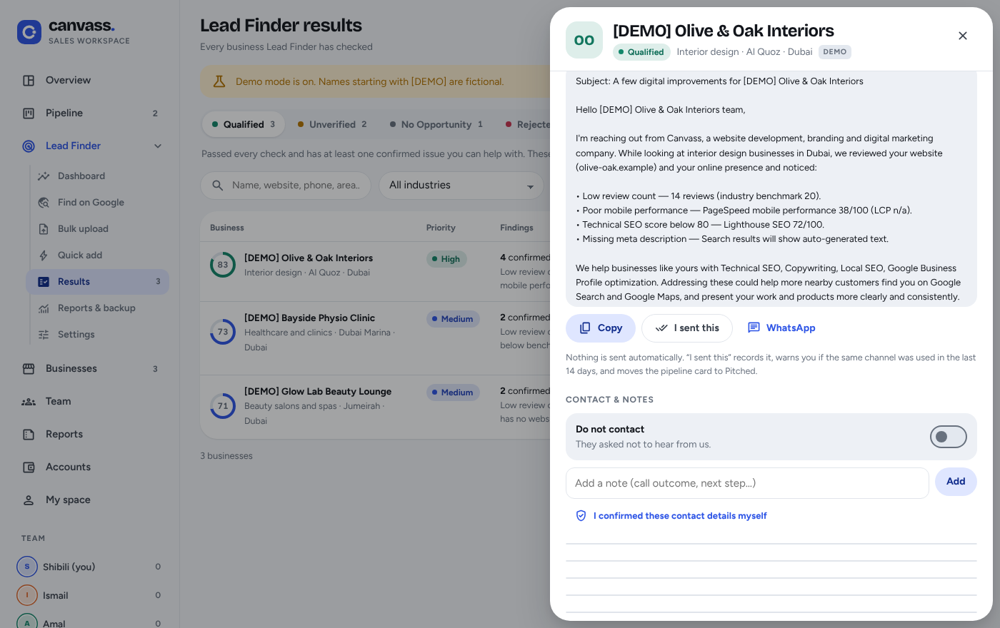
Every qualified business gets five drafts: Email, WhatsApp, Call script, Proposal and Audit offer. They use only real findings, include an opt-out line, and never promise results. Read them before sending.
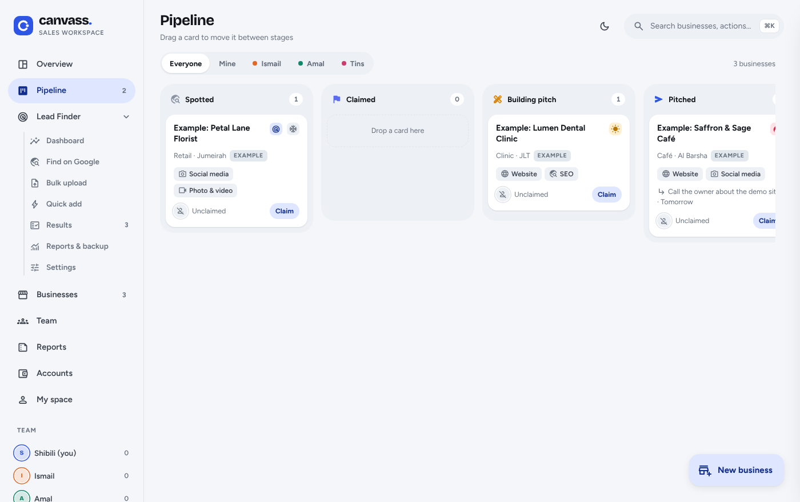
Qualified leads from Lead Finder land in Spotted, unclaimed, with Lead Finder's findings in the notes and a small radar mark on the card. From here everything works as in Pitch HQ: claim it, add helpers, log meetings and calls, drag it through the stages.
Open a card that came from Lead Finder and click Full report to see its findings, pitches and sources. Google ratings and reviews are not copied into the pipeline, as Google's terms require.
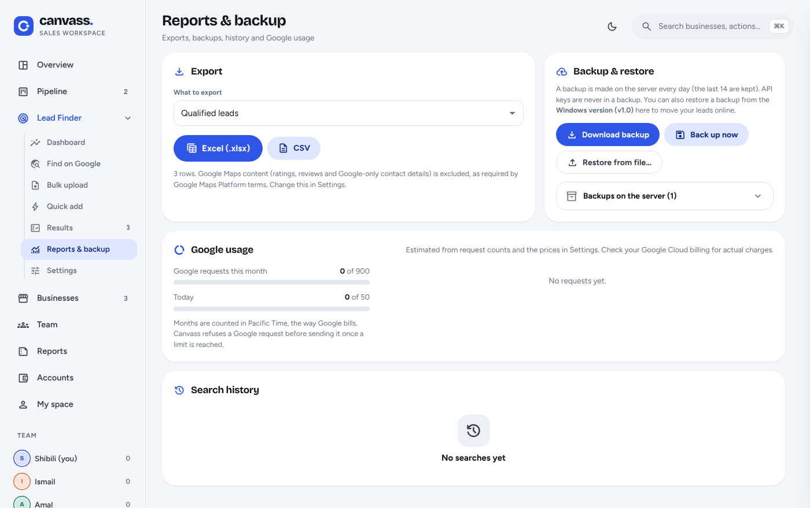
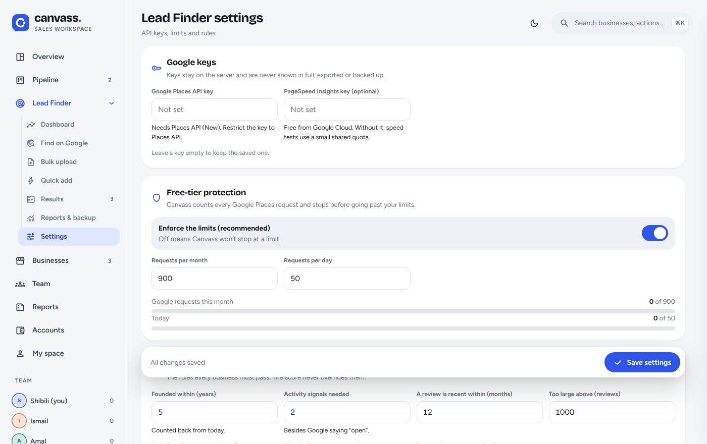
Only the admin can change these. Everyone else can see them.
| Section | What you can change |
|---|---|
| Google keys | Google Places key (needed for Find on Google); PageSpeed key (optional, for speed tests). Keys are masked and never leave the server. |
| Free-tier protection | Requests per month (default 900) and per day (default 50). Leave it switched on. |
| Which businesses qualify | Founded within (years, default 5), activity signals needed, recent review window, too-large and chain limits, most businesses per search, the estimate option, the old-website rule, whether a confirmed issue is required, and whether qualified leads join the pipeline automatically. |
| Lead score | The five score parts and where High and Medium priority start. |
| Benchmarks | Minimum reviews, rating and photos per industry. |
| Your company | Name, sender, phone, email and website used to sign pitches. |
| Services and industries | Switch services on or off; edit industries, Google place types and keywords. |
| Data and Google's terms | How long Google content is kept (30 days or less), links checked per website, the contact cooldown, speed tests, Google content in exports. |
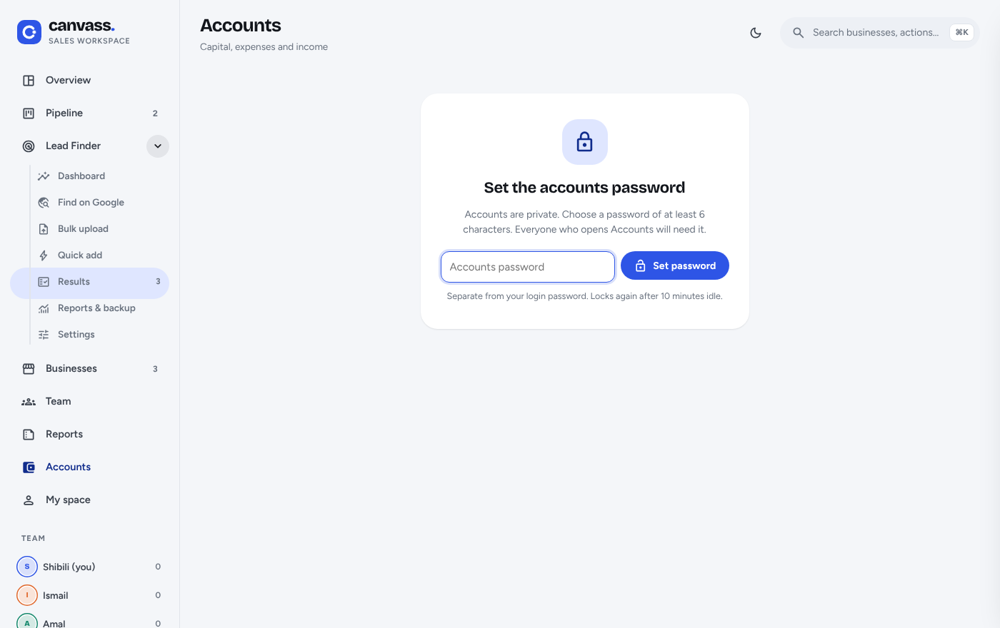
Accounts holds capital, expenses, income and recurring bills. It has its own password, separate from your login.
| Check | What Canvass looks at | If it fails |
|---|---|---|
| Not a duplicate | Google listing, website, phone, name and area | Skipped |
| Open now | Google says open plus a recent sign (review in the last 12 months, working website, or your evidence) plus at least 2 signs in total | Closed: Rejected. Not enough evidence: Unverified |
| Genuine | A Google Business listing or your confirmation | Unverified (Rejected if marked fake) |
| Right industry | Google categories and name keywords | Other industry: Rejected. Unclear: Unverified |
| Right area | The address city and country | Elsewhere: Rejected. No address: Unverified |
| Small or growing | Not over 1,000 reviews and not a chain of 3 or more same-name places | Rejected |
| Founded within 5 years | Licence or registration date with a source; old reviews; domain records and web archive (estimates only) | Older: Rejected. Not documented: Unverified |
| Contact details | A public phone, email or website | Unverified |
| Something to help with | At least one confirmed issue | No opportunity |
Why are many Google finds Unverified? A domain date shows when a website appeared, not when the company started. Canvass won't treat that as proof, and an old domain alone never rejects a business. Add the licence date in the report and it's re-checked at once.
Out of 100: age 20, active and genuine 25, Google profile gaps 25, website gaps 20, contact details 10. High priority from 80, Medium from 60. The score shows the size of the opportunity, not how trustworthy a business is, and it never overrides a failed check.
| Word | Meaning |
|---|---|
| Qualified | Passed every check and has at least one confirmed issue. Goes to the pipeline. |
| Unverified | Something important couldn't be confirmed. Never added to the pipeline automatically. |
| Rejected | Fails a rule: too old, closed, too large or a chain, wrong area or industry, or not genuine. |
| No opportunity | A good fit, but nothing confirmed to improve. |
| Verified / Estimated | Confirmed with a documented source / based on supporting evidence only. |
| Not Available | The source didn't provide this information. It isn't counted against the business. |
| Confirmed issue / Possible improvement | Measured directly / worth discussing, not proven. |